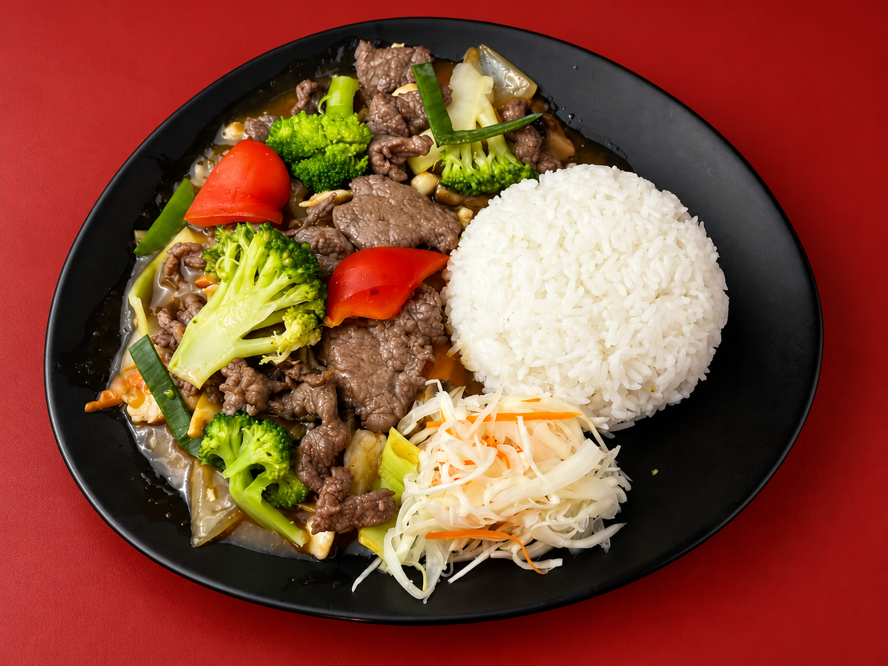
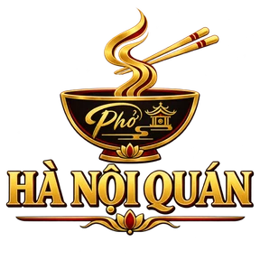
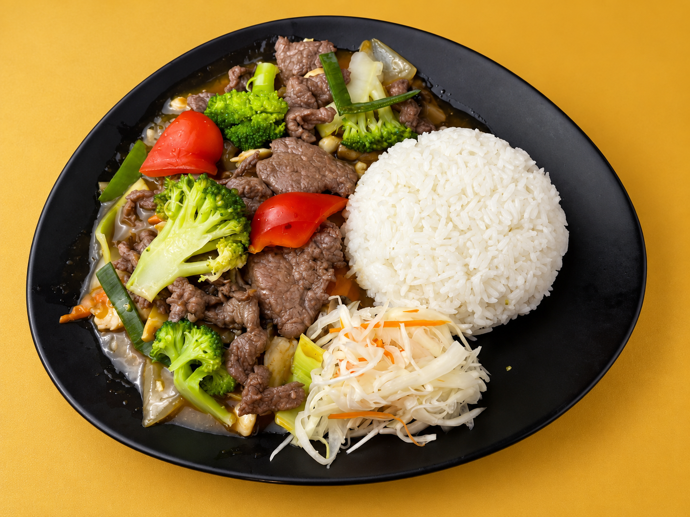
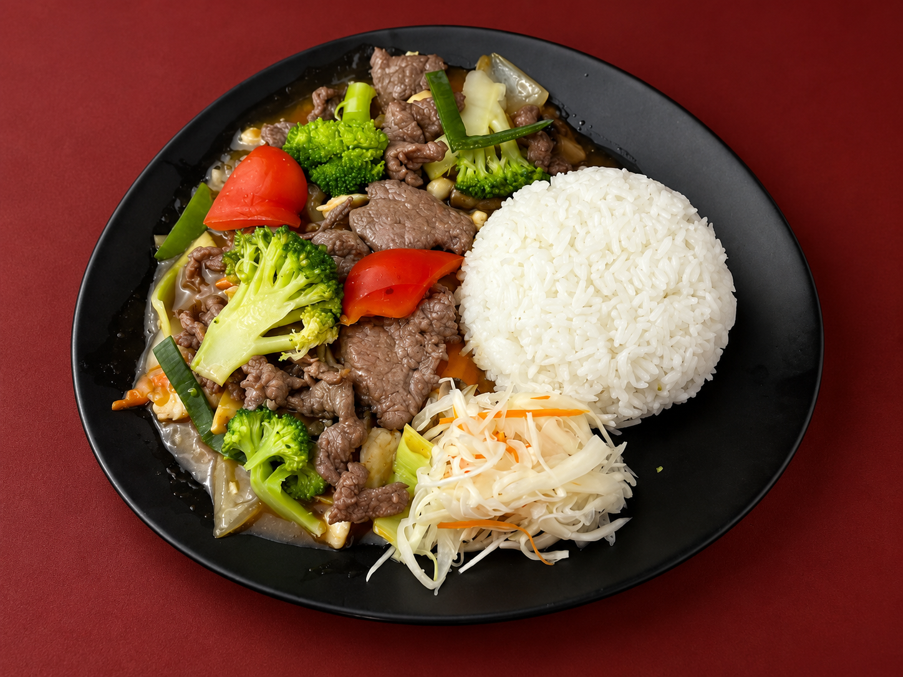

Đỏ son
Nổi món nhất, đúng tinh thần Á Đông và hợp màu nhận diện hiện tại.

Hà Nội QuánSo sánh nền ảnh món ăn
Cùng một món, cùng góc chụp và khung ảnh cắt sát để nhìn rõ màu nào làm món ăn nổi bật nhất.

Nổi món nhất, đúng tinh thần Á Đông và hợp màu nhận diện hiện tại.

Sáng, bắt mắt và làm đĩa đen tách khỏi nền rất rõ.

Trầm và sang hơn, hài hòa với giao diện tối nhưng độ tương phản nhẹ hơn.